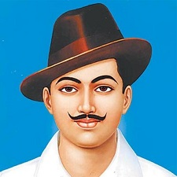

Bhagat Singh was a charismatic Indian socialist revolutionary whose two acts of dramatic violence against the British in India and execution at age 23 made him a folk hero of the Indian independence movement.In December 1928, Bhagat Singh and an associate, Shivaram Rajguru, fatally shot a 21-year-old British police officer, John Saunders, in Lahore, British India, mistaking Saunders, who was still on probation, for the British police superintendent, James Scott, whom they had intended to assassinate.[4] They believed Scott was responsible for the death of popular Indian nationalist leader Lala Lajpat Rai, by having ordered a lathi charge in which Rai was injured, and, two weeks more
Bhimrao Ramji Ambedkar (14 April 1891 – 6 December 1956), popularly known as Baba Saheb, was an Indian jurist, economist, politician and social reformer who inspired the Dalit Buddhist Movement and campaigned against social discrimination against Untouchables (Dalits), while also supporting the rights of women and labour.He was Independent India's first law minister and the principal architect of the Constitution of India.Ambedkar was a prolific student, earning doctorates in economics from both Columbia University and the London School of Economics, and gained a reputation as a scholar for his research in law, economics and political science.Ambedkar's legacy includes more
Kumaran also known as Tiruppur Kumaran (04th October 1904 – 11 January 1932) was an Indian revolutionary who participated in the Indian independence movement. Kumaran was born in Chennimalai in Madras Presidency, British India (current Erode district in Tamil Nadu). He founded Desa Bandhu Youth Association and led protests against the British. He died from injuries sustained from a police assault on the banks of Noyyal River in Tiruppur during a protest march against the British government on 11 January 1932. At the time of his death, he was holding the flag of the Indian Nationalists, which had been banned by the British giving rise to the epithet Kodi Kaththa Kumaran (Kumaran who held the flag). more